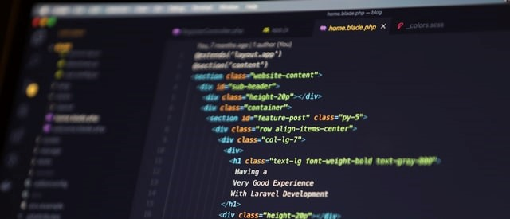

Post #1 Introdução ao HTML
Desde 1999, o desenvolvimento da linguagem(HyperText Markup Language) ficou estacionado na versão 4. De lá pra cá, a W3C esteve focada em linguagens como XML (Extensible Markup Language) e SVG (Scalable Vector Graphics - o uso de gráficos vetoriais em navegadores). Enquanto isso, desenvolvedores de navegadores estiveram preocupados em melhorar as funcionalidades destes, como exibir páginas em abas e oferecer integração com leitores de RSS. Recentemente, no entanto, organizações como Mozilla Foundation, Opera e Apple se uniram para atualizar o HTML e implementar novos e interessantes recursos.